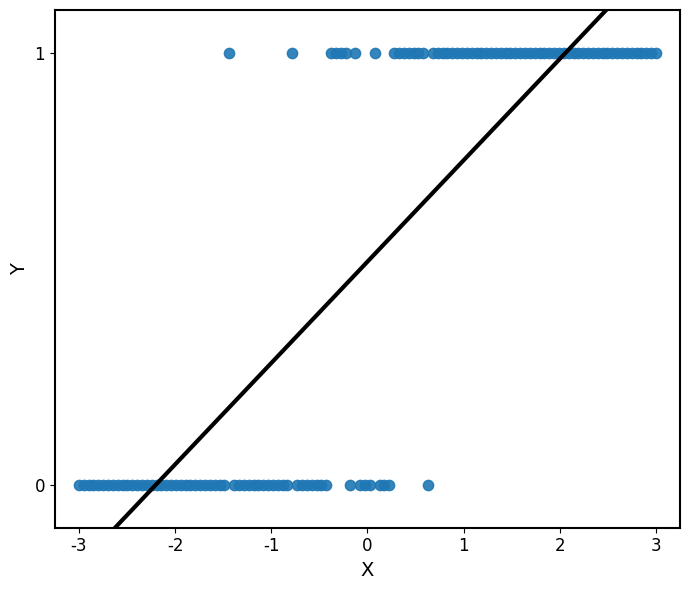
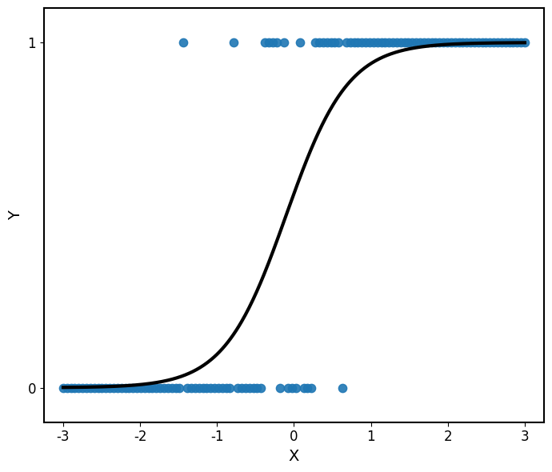

Aprendizaje supervisado
Regresión logística
Introducción
En muchos problemas de aprendizaje supervisado, la variable respuesta no es cuantitativa sino cualitativa.
Por ejemplo:
- ¿Un cliente comprará un producto?
- ¿Un paciente presenta una enfermedad?
- ¿Un correo es spam?
- ¿Un estudiante aprobará el curso?
En el caso más sencillo tenemos dos posibles resultados:
\[ Y\in\{0,1\}. \]
Nuestro objetivo será modelar la probabilidad de que ocurra uno de ellos.
Formulación del problema
Supongamos que observamos una variable predictora \(X\) y una variable respuesta binaria \(Y\in\{0,1\}.\)
Queremos modelar
\[ P(Y=1\mid X=x). \]
Definimos
\[ p(x)=P(Y=1\mid X=x). \]
Por lo tanto,
\[ P(Y=0\mid X=x)=1-p(x). \]
La regresión logística busca construir una función
\[ p(x)=f(x), \quad \text{tal que} \quad 0\leq p(x)\leq 1. \]
¿Por qué no usar regresión lineal?
Podríamos intentar modelar
\[ p(x)=\beta_0+\beta_1x. \]
Sin embargo, una función lineal puede producir valores menores que \(0\) o mayores que \(1\).
Por ejemplo,
\[ \beta_0+\beta_1x=1.4 \]
no puede interpretarse como una probabilidad.

Necesitamos una función que transforme cualquier valor real en un número entre \(0\) y \(1\).
Intuición geométrica
La regresión logística modela primero una combinación lineal
\[ z=\beta_0+\beta_1x. \]
Pero en lugar de utilizar \(z\) directamente como predicción, lo transforma mediante la función logística:
\[ p(x) = \frac{1}{1+e^{-z}}. \]

La función logística transforma cualquier número real en un valor entre \(0\) y \(1\), es decir, \(\sigma:\mathbb{R}\rightarrow(0,1)\).
Por lo tanto, modelamos la probabilidad de \(Y=1\) como \[ p(x) = P(Y=0\mid X=x) = \frac{1}{1+e^{-(\beta_0+\beta_1x)}}. \]
Derivación simple
Queremos relacionar una probabilidad \(p \in (0,1)\) con una expresión lineal que pueda tomar cualquier en \(\mathbb R\). Es decir, una función \[ \sigma:(0,1) \rightarrow \mathbb R \]
Primer intento
Comenzamos con la razón conocida como odds: \[ \frac{p}{1-p}. \]
Si \(p\in(0,1)\) entonces
\[ \frac{p}{1-p}\in(0,\infty). \]
Odds
Los odds comparan la probabilidad de que ocurra un evento con la probabilidad de que no ocurra:
\[ \text{odds} = \frac{p}{1-p}. \]
Por ejemplo, si
\[ p=0.8, \]
entonces
\[ \text{odds} = \frac{0.8}{0.2} = 4. \]
Esto significa que el evento es 4 veces más probable que ocurra a que no ocurra.
Log-odds
Los odds todavía están restringidos a valores positivos.
Aplicamos logaritmo:
\[ \log\left(\frac{p}{1-p}\right). \]
Esta transformación puede tomar cualquier valor real:
\[ -\infty < \log\left(\frac{p}{1-p}\right) < \infty. \]
Esta cantidad se conoce como logit o log-odds.
Modelo logístico
Ahora podemos modelar los log-odds mediante una función lineal:
\[ \log\left( \frac{p(x)}{1-p(x)} \right) = \beta_0+\beta_1x. \]
Resolviendo para \(p(x)\) obtenemos
\[ p(x)=\frac{1}{1+e^{-(\beta_0+\beta_1x)}}. \]
que es el modelo de regresión logística.
¿Qué estamos modelando realmente?
La relación entre \(X\) y la probabilidad no es lineal:
\[ p(x) = \frac{1} {1+e^{-(\beta_0+\beta_1x)}}. \]
Lo que sí es lineal es
\[ \boxed{ \log\left( \frac{p(x)}{1-p(x)} \right) = \beta_0+\beta_1x } \]
Es decir, la regresión logística es lineal en los log-odds.
Ejemplo simple
Supongamos que queremos modelar la probabilidad de aprobar un examen según las horas de estudio.
Sea
\[ Y= \begin{cases} 1, & \text{aprueba},\\ 0, & \text{no aprueba}. \end{cases} \]
Ajustamos el modelo de regresión logística y obtenemos
\[ \beta_0 = -4,\quad \beta_1 = 1 \]
- ¿Cuál es la probabilidad de aprobar si un estudiante estudia 3 horas? ¿Y si estudia 5 horas?
- ¿Cómo podemos convertir estas probabilidades en una decisión: aprueba o no aprueba?
- ¿A partir de cuántas horas de estudio el modelo clasifica a un estudiante como aprobado?
De probabilidades a clases
La regresión logística estima
\[ p(x)=P(Y=1\mid X=x). \]
Para obtener una clase debemos elegir un umbral de decisión \(c\):
\[ \hat y= \begin{cases} 1, & p(x)\geq c,\\ 0, & p(x)<c. \end{cases} \]
El valor \(c=0.5\) es una elección común, pero no necesariamente es la mejor.
La elección del umbral depende del problema y del costo de cometer diferentes tipos de error.
La frontera de decisión corresponde a los valores de \(x\) donde
\[ p(x)=c. \]
Extensión al caso general
Sea \(Y\in\{0,1\}\) una variable respuesta binaria y sean
\[ X_1,X_2,\ldots,X_p \]
las \(p\) variables predictoras.
Queremos modelar la probabilidad condicional
\[ p(x_1,\ldots,x_p) = P(Y=1\mid X_1=x_1,\ldots,X_p=x_p). \]
La regresión logística supone que los log-odds de esta probabilidad son una función lineal de los predictores:
\[ \log\left( \frac{p(x_1,\ldots,x_p)} {1-p(x_1,\ldots,x_p)} \right) = \beta_0+\beta_1x_1+\cdots+\beta_px_p. \]
Notación matricial
Para incluir el intercepto, definimos
\[ \mathbf x = (1,x_1,\ldots,x_p)^T, \qquad \boldsymbol\beta = (\beta_0,\beta_1,\ldots,\beta_p)^T. \]
Entonces,
\[ \beta_0+\beta_1x_1+\cdots+\beta_px_p = \mathbf x^T\boldsymbol\beta. \]
Por lo tanto, el modelo puede escribirse como
\[ \log\left( \frac{p(\mathbf x)} {1-p(\mathbf x)} \right) = \mathbf x^T\boldsymbol\beta. \]
Despejando \(p(\mathbf x)\),
\[ p(\mathbf x) = \frac{e^{\mathbf x^T\boldsymbol\beta}} {1+e^{\mathbf x^T\boldsymbol\beta}}. \]
Modelo multivariado
Modelo de regresión logística
Sea \(Y\in\{0,1\}\) una variable respuesta binaria y sean
\[ \mathbf x=(1,x_1,\ldots,x_p)^T, \qquad \boldsymbol\beta=(\beta_0,\beta_1,\ldots,\beta_p)^T, \]
el vector de predictores y el vector de parámetros, respectivamente.
La probabilidad condicional de \(Y=1\) está dada por
\[ \boxed{ p(\mathbf x) = P(Y=1\mid \mathbf x) = \frac{1} {1+e^{-\mathbf x^T\boldsymbol\beta}} }. \]
¿Cómo estimamos los coeficientes?
Recordemos que en regresión lineal estimamos
\[ \hat{\boldsymbol\beta} = \underset{\boldsymbol\beta}{\arg\min}\; \text{RSS}(\boldsymbol\beta) = \underset{\boldsymbol\beta}{\arg\min}\; (\mathbf y-\mathbf X\boldsymbol\beta)^T (\mathbf y-\mathbf X\boldsymbol\beta). \]
Podríamos plantear un criterio similar para regresión logística:
\[ \underset{\boldsymbol\beta}{\arg\min} \sum_{i=1}^n \left(y_i-p_i\right)^2, \qquad p_i=P(Y_i=1\mid \mathbf x_i). \]
Sin embargo, ahora sabemos que nuestra variable respuesta sigue una distribución
\[ Y_i\mid\mathbf x_i \sim\operatorname{Bernoulli}(p_i). \]
En lugar de minimizar errores cuadrados, utilizaremos la distribución de \(Y_i\) para estimar los parámetros del modelo.
Utilizando la distribución de \(Y\)
Sabemos que
\[ Y_i\mid\mathbf x_i \sim \operatorname{Bernoulli}(p_i). \]
Por lo tanto,
\[ P(Y_i=y_i\mid\mathbf x_i) = \begin{cases} p_i, & y_i=1,\\ 1-p_i, & y_i=0. \end{cases} \]
Esto puede escribirse de forma compacta como
\[ P(Y_i=y_i\mid\mathbf x_i) = p_i^{y_i}(1-p_i)^{1-y_i}. \]
Esta expresión nos dice qué tan probable es observar \(y_i\) para un valor dado de \(p_i\).
Función de verosimilitud
Para cada observación tenemos
\[ P(Y_i=y_i\mid\mathbf x_i) = p_i^{y_i}(1-p_i)^{1-y_i}. \]
Si suponemos que las observaciones son independientes, la probabilidad conjunta de observar
\[ y_1,y_2,\ldots,y_n \]
es el producto de las probabilidades individuales:
\[ L(\boldsymbol\beta) = \prod_{i=1}^{n} p_i^{y_i}(1-p_i)^{1-y_i}. \]
La función de verosimilitud mide qué tan compatibles son los parámetros \(\boldsymbol\beta\) con los datos observados.
Máxima verosimilitud
Queremos encontrar los valores de \(\boldsymbol\beta\) que hagan más probable observar los datos que obtuvimos.
Por lo tanto,
\[ \hat{\boldsymbol\beta} = \underset{\boldsymbol\beta}{\arg\max} \;L(\boldsymbol\beta). \]
Como
\[ L(\boldsymbol\beta) = \prod_{i=1}^{n} p_i^{y_i}(1-p_i)^{1-y_i}, \]
maximizar la verosimilitud significa encontrar los coeficientes que asignen probabilidades altas a los resultados observados.
Los coeficientes de la regresión logística se estiman mediante máxima verosimilitud.
Log-verosimilitud
Queremos maximizar la función de verosimilitud
\[ L(\boldsymbol\beta) = \prod_{i=1}^{n} p_i^{y_i}(1-p_i)^{1-y_i}. \]
Sin embargo, esta expresión contiene un producto. Como la función logarítmica transforma productos en sumas y además es estrictamente creciente, definimos \(\ell(\boldsymbol\beta) = \log L(\boldsymbol\beta).\)
Entonces,
\[ \underset{\boldsymbol\beta}{\arg\max}\;L(\boldsymbol\beta) = \underset{\boldsymbol\beta}{\arg\max}\;\ell(\boldsymbol\beta). \]
Estimación por máxima verosimilitud
\[ \hat{\boldsymbol\beta} = \underset{\boldsymbol\beta}{\arg\max}\; \left[\sum_{i=1}^{n} \left[ y_i\log(p_i) + (1-y_i)\log(1-p_i) \right]\right]. \]
Una diferencia importante
En regresión lineal obtuvimos una solución cerrada:
\[ \hat{\boldsymbol\beta} = (\mathbf X^T\mathbf X)^{-1} \mathbf X^T\mathbf y. \]
En regresión logística, en general, no existe una solución cerrada equivalente para
\[ \hat{\boldsymbol\beta} = \underset{\boldsymbol\beta}{\arg\max}\; \ell(\boldsymbol\beta). \]
Por lo tanto, los coeficientes se obtienen mediante optimización numérica.
Newton-Raphson es un método iterativo que, aplicado a la maximización de la log-verosimilitud, produce la actualización
\[ \boldsymbol\beta^{(t+1)} = \boldsymbol\beta^{(t)} - \left[ \nabla^2\ell(\boldsymbol\beta^{(t)}) \right]^{-1} \nabla\ell(\boldsymbol\beta^{(t)}). \]
Predicción y clasificación
Una vez estimados los parámetros, para una nueva observación \(\mathbf x_*\) calculamos
\[ \hat p = \frac{1} {1+e^{-\mathbf x_*^T\hat{\boldsymbol\beta}}}. \]
Esta es una predicción probabilística.
Para obtener una clase, elegimos un umbral \(c\):
\[ \hat y = \begin{cases} 1, & \hat p\geq c,\\ 0, & \hat p<c. \end{cases} \]
Un valor común es \(c=0.5\), pero el umbral depende del problema.
Interpretación de los coeficientes
Recordemos que
\[ \log\left(\frac{p}{1-p}\right) = \beta_0+\beta_1x_1+\cdots+\beta_px_p. \]
Manteniendo las demás variables constantes, aumentar \(x_j\) una unidad cambia los log-odds en
\[ \beta_j. \]
Equivalentemente, los odds se multiplican por
\[ \boxed{e^{\beta_j}} \]
Esta cantidad se conoce como odds ratio.
Por ejemplo, si \(e^{\beta_j}=2\), los odds se multiplican por \(2\).
Inferencia sobre los coeficientes
Para muestras suficientemente grandes,
\[ \hat\beta_j \approx \mathcal N\left( \beta_j, \operatorname{SE}(\hat\beta_j)^2 \right). \]
Esto permite construir intervalos de confianza y realizar pruebas de hipótesis, por ejemplo,
\[ H_0:\beta_j=0 \qquad\text{vs.}\qquad H_1:\beta_j\neq0. \]
Una prueba común utiliza el estadístico de Wald:
\[ z= \frac{\hat\beta_j} {\operatorname{SE}(\hat\beta_j)}. \]
Métricas de clasificación
Después de seleccionar un umbral, comparamos \(y_i\) con \(\hat y_i\):
| Predicción \(1\) | Predicción \(0\) | |
|---|---|---|
| Real \(1\) | TP | FN |
| Real \(0\) | FP | TN |
A partir de la matriz de confusión podemos definir distintas métricas de desempeño.
Métricas de clasificación
\[ \operatorname{Accuracy} = \frac{TP+TN}{TP+TN+FP+FN} \]
\[ \operatorname{Precision} = \frac{TP}{TP+FP}, \qquad \operatorname{Recall} = \frac{TP}{TP+FN}. \]
- Accuracy: ¿qué proporción clasificamos correctamente?
- Precision: de los positivos predichos, ¿cuántos eran positivos?
- Recall: de los positivos reales, ¿cuántos detectamos?
La métrica adecuada depende del costo de los distintos tipos de error.
El umbral importa
Cambiar el umbral \(c\) modifica las clases predichas y, por lo tanto, las métricas de clasificación.
En general, disminuir \(c\) produce más predicciones positivas:
\[ c\downarrow \quad\Rightarrow\quad \operatorname{Recall}\uparrow, \]
pero también puede aumentar los falsos positivos.
La curva ROC estudia el comportamiento del clasificador para distintos valores del umbral.
Evaluación probabilística
Las métricas anteriores evalúan las clases predichas. También podemos evaluar directamente las probabilidades \(\hat p_i\).
La log-loss está dada por
\[ -\frac1n \sum_{i=1}^{n} \left[ y_i\log(\hat p_i) + (1-y_i)\log(1-\hat p_i) \right]. \]
La log-loss corresponde a la log-verosimilitud negativa promedio.
Una menor log-loss indica mejores predicciones probabilísticas.
Supuestos y limitaciones
La regresión logística supone que:
- la respuesta es binaria;
- las observaciones son independientes;
- los log-odds tienen una relación lineal con los predictores;
- no existe multicolinealidad extrema;
- existe información suficiente para estimar los parámetros.
No supone que los predictores sean normales ni que la probabilidad sea una función lineal de los predictores.
Además, puede presentar problemas cuando existe separación perfecta entre las clases.
Resumen
- Idea clave 1.
- Idea clave 2.
- Idea clave 3.
Referencias
Preguntas

¿Qué sigue?
Descripcion breve
Modelado de Datos · UACJ